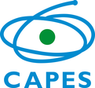
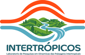
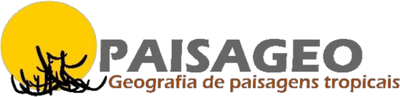

Baixar o Nomos
Baixar para AndroidÚltima versão publicada · Android
Como instalar
- Toque em Baixar para Android e aguarde o arquivo ser baixado.
- O navegador pode avisar que o arquivo pode ser prejudicial. Isso é comum em aplicativos instalados fora da loja. Escolha manter o download.
- Abra o arquivo baixado.
- O Android pode pedir permissão para o navegador instalar aplicativos de fontes desconhecidas. Autorize somente para esta instalação.
- Conclua a instalação.
O que é o Nomos
O Nomos apoia inventários ambientais. Em sua versão inicial, implementa um protocolo de cartografia da paisagem desenvolvido no PPGEO da UFPE, servindo como intermediário técnico-metodológico para substituir registros analógicos por um fluxo digital estruturado, padronizado e reprodutível. O aplicativo também permite usar protocolos mais simples, criados pelo próprio usuário.
- Coleta offline. Os registros ficam salvos no próprio aparelho, sem exigir conexão em campo.
- Classificação fisionômica automatizada. Gera a fórmula de vegetação segundo o sistema de Küchler.
- Nomenclatura padronizada da paisagem. Compõe o nome da unidade a partir dos atributos observados em campo.
- Arquitetura modular de protocolos. O protocolo de referência é um módulo entre outros, e é possível criar protocolos personalizados.
- Exportação estruturada. Gera dados em GeoJSON e CSV, com as mídias de campo em um arquivo compactado.
Guia e tutoriais
-
Guia prático de uso
Orientações práticas para usar o aplicativo nos inventários ambientais em campo.
Abrir guia (abre em nova aba)O guia está disponível, por enquanto, apenas em português.
Autoria
Autor
Pablo Guilherme de Melo Neves
Orientador
Lucas Costa de Souza Cavalcanti
Vinculação e apoio institucional
O Nomos é um produto tecnológico desenvolvido em pesquisa de mestrado vinculada ao Programa de Pós-Graduação em Geografia (PPGEO) da Universidade Federal de Pernambuco (UFPE). A pesquisa tem afiliação científica ao Laboratório de Pesquisa em Dinâmicas de Paisagens Intertropicais (INTERTRÓPICOS) e ao Grupo de Pesquisa em Geografia e Conservação em Paisagens Tropicais (PAISAGEO). A pesquisa conta com o apoio da Coordenação de Aperfeiçoamento de Pessoal de Nível Superior (CAPES).



Como citar
Para citar o Nomos como software, use a referência abaixo.
Referências geradas automaticamente. Confira as normas da revista ou da instituição.
Para citar uma versão específica, use o DOI dela no registro do Zenodo (abre em nova aba).
Código e licença
O código do Nomos está aberto e é distribuído sob a licença GNU GPL v3.